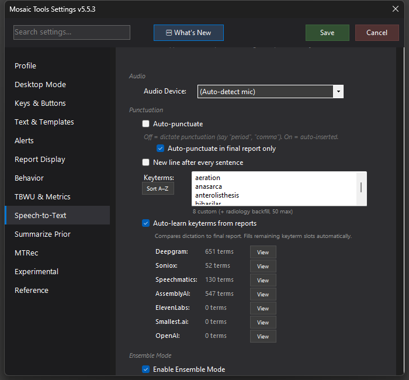

Keyterms & Auto-Learning
Radiology vocabulary sent to the speech engines to bias recognition toward the right words — plus auto-learning that harvests new terms from your own signed reports.

What it does
Speech engines let you supply a list of "keyterms" — words to favor when the audio is ambiguous, which is exactly where radiology vocabulary lives (periportal, echogenicity, spondylolisthesis). MosaicTools maintains that list for you in three tiers: your manual terms, auto-learned terms, and a built-in radiology backfill database that fills whatever slots remain. The merged list is sent to every engine in your ensemble, formatted however each one needs it (Whisper gets it as a prompt string).
Auto-learning watches for low-confidence words during dictation and verifies them against the final signed report — if you kept the word, it's a real term the engine struggled with, and it earns a keyterm slot. Each engine keeps its own learned list, since each mishears different things.
How to turn it on / set it up
- Manual terms: Settings → Speech-to-Text → Keyterms box, one per line (a Sort A–Z button and a live count are next to it).
- Auto-learning: check Auto-learn keyterms from reports. Per-engine stats rows (Deepgram, Soniox, Speechmatics, AssemblyAI, ElevenLabs, OpenAI…) show how many terms each has learned, with a View button to inspect or prune them.
Using it
It's invisible in daily use — recognition of your recurring hard words simply improves over weeks as the learned lists grow.
Tips & gotchas
- Every engine caps its keyterm count, so priority matters: manual terms win, and an auto-learned term misrecognized at least 3 times jumps ahead of the rest. Duplicates across tiers are never sent twice.
- Keyterms bias recognition; they don't force it. For deterministic swaps use Custom word replacements under Text Processing instead.